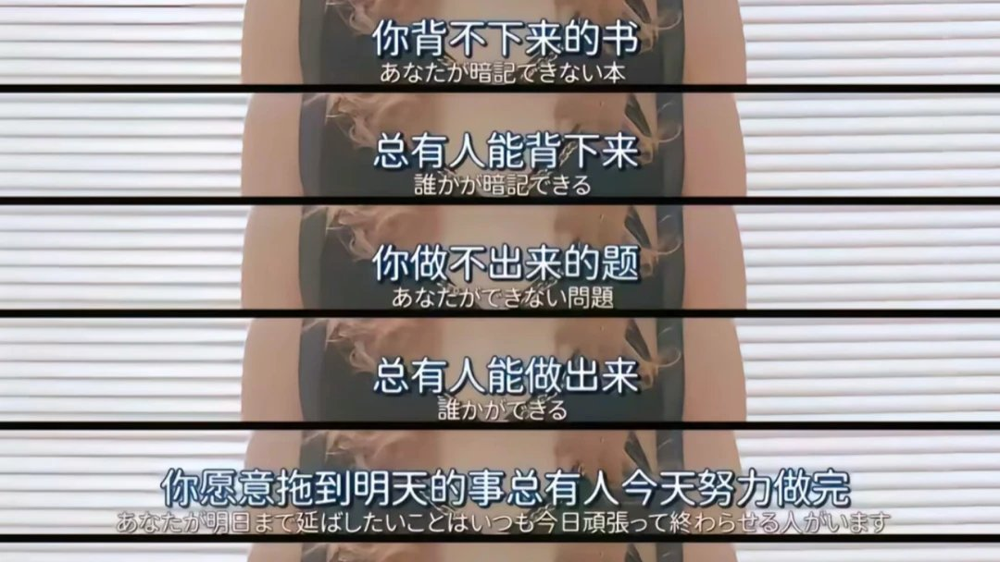

コピー
@copymellowclip
我是觉得没有问题啊，说到底为什么想去那些学校，大多数人就是为了工作然后轻松赚钱、或者是家长或社会带来的期许吧？
如果别人比我更努力，或者更有天赋那就让他去吧，我去差一点的学校也没关系，找找自己的天赋就好了，实在找不到承认自己是普通的人然后继续活着也没关系吧？一定要和别人比较吗？

大狐帝国史官邹智萱（笔名段歌文）
@Rococo90933671
以前看到那些所谓“励志语录”的时候，会觉得热血、上头，甚至会觉得自己被点燃了。
可现在真的越来越觉得，这些东西本质上就是纯纯PUA。
“你背不下来的书，总有人能背下来。”
“你做不出来的题，总有人能做出来。” https://t.co/4xKComrTWT